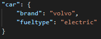

JavaScript
JS is a scripting language that allows developers to make websites feel more dynamic. Update HTML, change content and modify elements on webpages when reacting to a clients user actions.
NodeJS
NodeJS, unlike JavaScript, can run outside of your browser and runs on the V8 JavaScript runtime engine. NodeJS enables developers to do much more than just make websites more interactive.
NodeJS also makes it possible to use NPM, the worlds largest ecosystem of open source libraries in the world.
It is a framework that lets you write server-sided JavaScript applications.
To run Node.JS applications we can type: 'node app.js' in this instance.
Client/Server
A client server application is where a central computer (the server) is responsible for handling client requests such as requesting to visit a website, access data or maybe process data.
Servers can handle one or multiple clients.
The client can be anything from a mobile phone, a laptop or even a Raspberry Pi.
JSON
JSON is used to transfer data between a server and to a webpage. It is quite readable for humans and easy for machines to parse.
JSON is written in the following way:

JSON objects consists of key/value pairs and here we have a car object that has two key/value pairs. There's a key of 'brand' and value of 'volvo'.
Hoisting and var/let/const
Hoisting in JavaScript means that JS moves declarations to the top. It also means that you can use a variable before it has been declared. This goes for declaring variables with var.
It is not the same with let and const. Var has been alone since the introduction of let and const. Let and const solves some issues that var has. They are not hoisted.
We have learned that you can get perfectly by only using let and const for your applications. They work differently though. A let variable can be updated but not re-declared. A const variable cannot be updated or re-declared, but an objects properties can be updated with const.